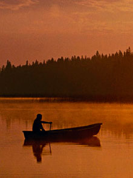

The Seven Wonders of Canada
The Canoe | The Igloo | Niagara Falls | Old Québec City | Pier 21, Halifax | Prairie Skies | The Rockies
The Canoe, Ontario
My paddle clean and bright,
Flashing with silver.
Follow the wild goose flight,
Dip, dip and swing.
This is the familiar refrain of an old canoeing song, and what better than the canoe to stand for everything Canadian? The canoe has slipped quietly into the stream of the nation's common parlance. Whether you're practicing your J-Stroke out on the lake, rooting for your favourite professional soccer team in the national Voyageurs Cup, or simply standing at the corner of Portage and Main in Winnipeg, you are reflecting a bit of Canadian canoeing history. Canoes take many forms: from the slick lines of a racing canoe, to the ruggedness of a seagoing cedar canoe, from cleverly assembled birch bark, to the shiny fiberglass, or the comfy inflatable. Early explorers and voyageurs took their cue from the Aboriginal peoples of Canada, utilizing the canoe as the most versatile and reliable mode of transportation. We received many nominations making this important historical link between the establishment of European culture and industry in Canada, and the canoe. Furthermore, if it weren't for the humble canoe, half the wonders on this list would be inaccessible!